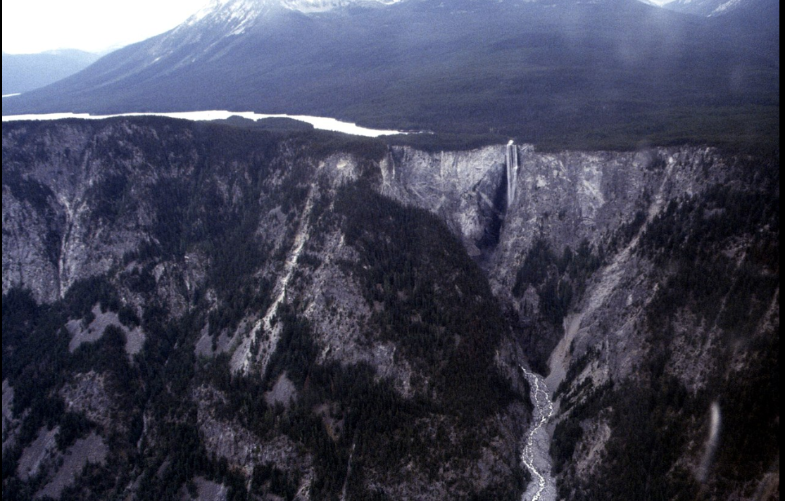
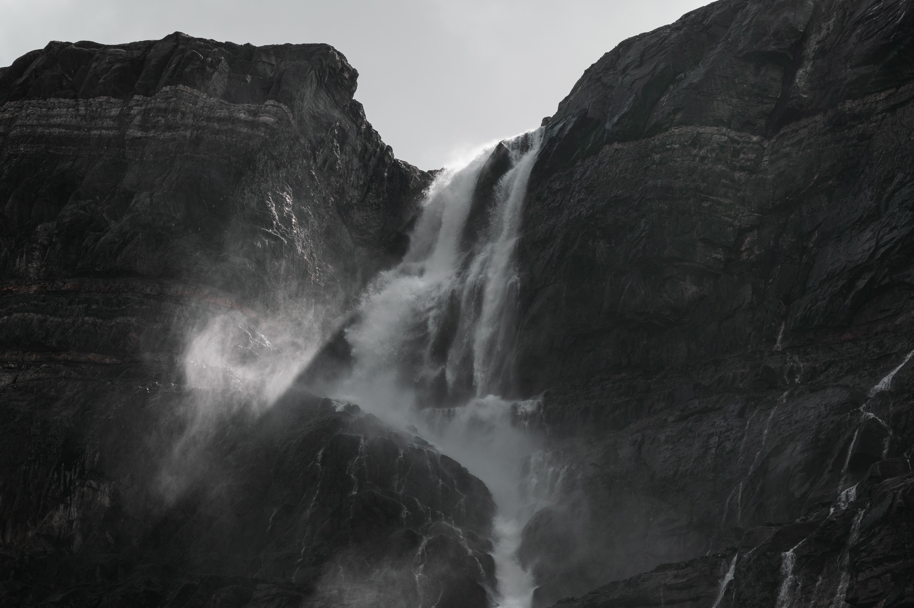
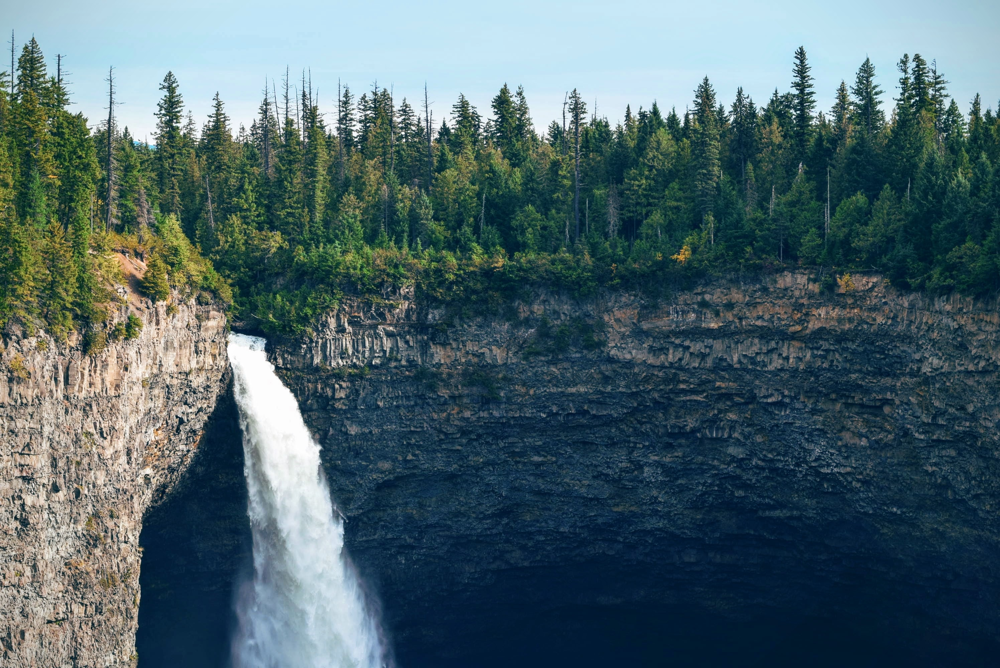
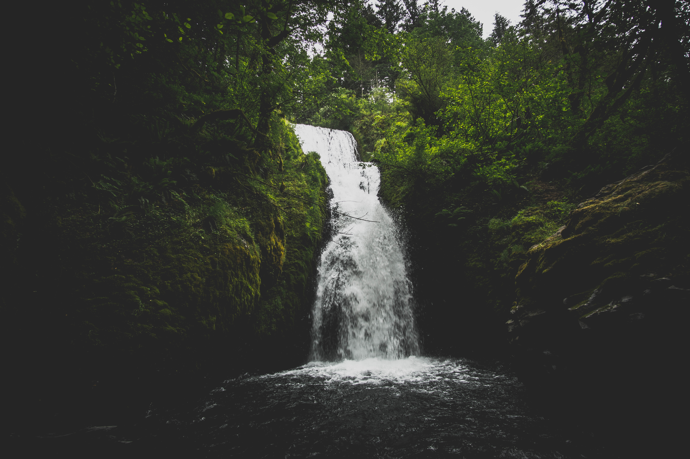

- Della Falls

Della Falls is a waterfall in Strathcona Provincial Park on Vancouver Island and is among one of the tallest waterfalls in Canada.
- Hunlen Falls

Hunlen Falls is a waterfall in the Pacific Ranges of the Coast Mountains of British Columbia, Canada. It is located in Tweedsmuir South Provincial Park, west of the communities of Tatla Lake, Kleena Kleene and Nimpo Lake, and east of Bella Coola.
- Panther Falls

Panther Falls are a series of waterfalls in Banff National Park, Alberta, Canada. It is developed on Nigel Creek and its waters originate in Nigel Pass, between the slopes of Cirrus Mountain and Nigel Peak in the Parker Ridge of the Canadian Rockies.
- Helmcken Falls

Helmcken Falls is the fourth highest waterfall in Canada, measured by total straight drop without a break. Higher Canadian waterfalls are Hunlen Falls in Tweedsmuir Provincial Park, Takakkaw Falls in Yoho National Park, and Della Falls in Strathcona Provincial Park, all in British Columbia.
- Bridal Veil Falls (Banff)

Bridal Veil Fall is a waterfall in Banff National Park, Alberta, Canada. It originates in the Huntington Glacier on the slopes of Cirrus Mountain. Its waters drain into Nigel Creek, then into the North Saskatchewan River at the Big Bend of the Icefields Parkway.